Breakthroughs in Communications#
“The fundamental problem of communication is that of reproducing at one point either exactly or approximately a message selected at another point.” – Claude E. Shannon, 1948
Electrical communication grew from Hertz’s laboratory sparks to a theory
precise enough to say how many bits per second any channel can carry.
Telephone and radio engineers at Bell Labs and elsewhere supplied most of the
tools in this chronology: modulation, the decibel, the noise figure and the
link budget. Shannon’s information theory then turned the field from an
art into a science with a hard limit. The entries trace the ideas behind
engineeringkit.communications. Each links to the implementing function
and to a gallery example devoted to it.
1887-1888 – Hertz Generates and Measures Radio Waves#
James Clerk Maxwell’s equations (1865) predicted electromagnetic waves travelling at the speed of light, but no one had produced or detected them. Heinrich Hertz drove a spark-gap dipole at a few hundred megahertz and detected the radiation with a resonant loop across the room. A metal sheet reflected the waves into a standing pattern, and the spacing of the nodes, half a wavelength, multiplied by the oscillation frequency gave the speed of light. Hertz thought the waves had no practical use. Within a decade Marconi was sending telegraph messages with them.
Implementation: engineeringkit.communications.wavelength(). The
example reconstructs the standing-wave measurement and maps wavelengths
across the radio spectrum.
References: H. Hertz, “Über Strahlen elektrischer Kraft,” Annalen der Physik 36 (1888) 769-783.
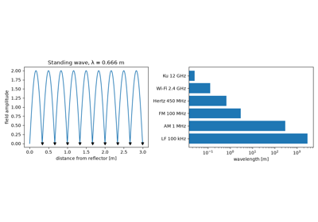
Hertz’s electromagnetic waves and their wavelength
1906 – Fessenden’s Amplitude Modulation#
Spark transmitters could send only on-off Morse code. Reginald Fessenden used a high-frequency alternator to produce a continuous carrier and varied its amplitude with a microphone. On Christmas Eve 1906 he is said to have broadcast voice and violin music from Brant Rock, Massachusetts, to ships at sea. Conventional AM, \(A_c[1 + \mu m(t)]\cos 2\pi f_c t\), keeps the carrier so that a simple envelope detector (later a crystal set) can recover the message, at the cost of spending most of the power on the carrier.
Implementation: engineeringkit.communications.am_signal(). The
example shows envelope detection succeeding at \(\mu = 0.7\), failing
under overmodulation, and the one-third limit on sideband power.
References: R. A. Fessenden, “Wireless telephony,” Trans. AIEE 27 (1908) 553-629.
1915 – Carson’s Suppressed-Carrier and Single-Sideband Modulation#
John Renshaw Carson of AT&T analysed modulation mathematically and saw that the AM carrier conveys no information: the message lives entirely in the two sidebands, each a mirror of the other. His 1915 patent application suppressed the carrier, and then one sideband, halving the bandwidth and saving most of the power. That made carrier-frequency multiplexing of many telephone calls on one long-distance line practical. The receiver must regenerate a coherent carrier, and any phase error scales the recovered message by \(\cos\phi\).
Implementation: engineeringkit.communications.dsb_sc(). The example
demodulates coherently with phase errors of 0°, 45° and 90° and shows the
missing carrier line.
References: J. R. Carson, “Method and means for signaling with high frequency waves,” U.S. Patent 1,449,382 (filed 1915, issued 1923).
1924-1929 – The Decibel#
Telephone engineers once measured loss in “miles of standard cable”, a unit that depended on frequency. In 1924 the Bell System adopted the transmission unit, ten times the common logarithm of a power ratio, and in 1929 W. H. Martin announced its new name, the decibel, after Alexander Graham Bell. Because logarithms turn products into sums, the gains and losses along a chain of cables, repeaters and antennas can be budgeted by simple addition.
Implementation: engineeringkit.communications.db(),
engineeringkit.communications.from_db(),
engineeringkit.communications.dbm() and
engineeringkit.communications.from_dbm(). The example checks that the
decibel sum along a repeater chain equals the linear product.
References: W. H. Martin, “DeciBel – the name for the transmission unit,” Bell Syst. Tech. J. 8 (1929) 1-2.
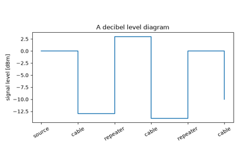
The decibel: the Bell System’s transmission unit
1928 – Nyquist’s Signalling Rate#
How fast can telegraph pulses be sent through a line of limited bandwidth? Harry Nyquist showed that a channel of bandwidth \(B\) passes at most \(2B\) independent pulses per second. At that rate suitably shaped pulses, in the ideal case \(\operatorname{sinc}(2Bt)\), vanish at every other pulse’s sampling instant, so there is no intersymbol interference. The same paper contains the seed of the sampling theorem and the Nyquist criterion for pulse shaping still used in every modem.
Implementation: engineeringkit.communications.nyquist_symbol_rate()
and engineeringkit.communications.symbol_rate(). The example sends
BPSK sinc pulses at and above \(2B\) and measures the interference.
References: H. Nyquist, “Certain topics in telegraph transmission theory,” Trans. AIEE 47 (1928) 617-644.
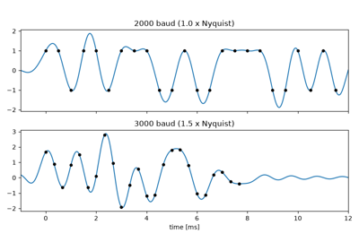
Nyquist’s signalling rate: 2B pulses per second
1928 – Hartley’s Law#
Ralph Hartley stripped “information” of meaning and defined it by choice. A sequence of \(n\) symbols, each drawn from \(M\) distinguishable values, singles out one of \(M^n\) possibilities and so carries \(n\log M\) units. Combined with Nyquist’s \(2B\) symbols per second, the line rate is \(2B\log_2 M\) bits per second. Hartley recognised that noise limits how many levels can be distinguished, but it took Shannon to say exactly how.
Implementation: engineeringkit.communications.hartley_capacity().
The example sends multilevel symbols through Gaussian noise and shows the
error rate rising as the levels crowd together.
References: R. V. L. Hartley, “Transmission of information,” Bell Syst. Tech. J. 7 (1928) 535-563.
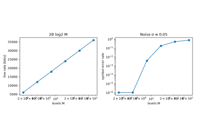
Hartley’s law: information grows with the logarithm of the levels
1928 – Johnson-Nyquist Thermal Noise#
John B. Johnson at Bell Labs found a random voltage across every resistor, proportional to its resistance, its absolute temperature and the measurement bandwidth, and independent of its material. In the same issue of Physical Review, Nyquist derived the result from thermodynamics and the equipartition of energy among the modes of a transmission line. The available noise power, \(kTB\) or -174 dBm/Hz at 290 K, is the floor against which every receiver’s sensitivity is measured.
Implementation: engineeringkit.communications.thermal_noise_power().
The example synthesises resistor noise, recovers \(kTB\) and the
open-circuit voltage \(\sqrt{4kTRB}\), and checks that the spectrum is
flat.
References: J. B. Johnson, “Thermal agitation of electricity in conductors,” Phys. Rev. 32 (1928) 97-109; H. Nyquist, “Thermal agitation of electric charge in conductors,” Phys. Rev. 32 (1928) 110-113.
1933-1936 – Armstrong’s Wideband FM#
The prevailing view, argued by Carson in 1922, was that frequency modulation offered no bandwidth saving over AM and so no advantage. Edwin Howard Armstrong turned the argument around. He used a frequency deviation much larger than the audio bandwidth, and a limiter and discriminator in the receiver, to trade bandwidth for a dramatic suppression of noise and static. The spectrum of tone-modulated FM is a comb of sidebands with Bessel-function amplitudes. Carson’s own rule, \(B \approx 2(\Delta f + W)\), gives the bandwidth that holds about 98% of the power.
Implementation: engineeringkit.communications.fm_signal() and
engineeringkit.communications.carson_bandwidth(). The example matches
measured spectral lines to \(|J_n(\beta)|\) and sizes broadcast FM.
References: E. H. Armstrong, “A method of reducing disturbances in radio signaling by a system of frequency modulation,” Proc. IRE 24 (1936) 689-740; J. R. Carson, “Notes on the theory of modulation,” Proc. IRE 10 (1922) 57-64.
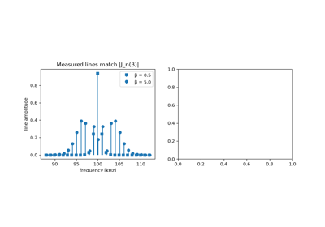
Armstrong’s wideband FM and Carson’s bandwidth rule
1944 – Friis’s Noise Figure#
Harald Friis gave receiver engineers a single number to compare designs. The noise factor \(F\) is the ratio of the signal-to-noise ratio at a device’s input to that at its output, for a 290 K source. For stages in cascade, \(F = F_1 + (F_2 - 1)/G_1 + (F_3 - 1)/(G_1 G_2) + \cdots\). Each later stage’s noise is divided by the gain ahead of it, so a high-gain, low-noise first amplifier sets the noise figure of the whole receiver.
Implementation: engineeringkit.communications.cascaded_noise_factor()
and engineeringkit.communications.noise_figure(). The example checks
the formula against a sample-by-sample simulation and compares orderings of
the same three stages.
References: H. T. Friis, “Noise figures of radio receivers,” Proc. IRE 32 (1944) 419-422.
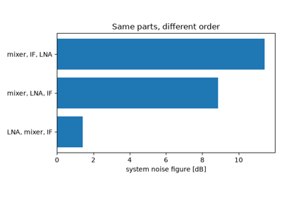
Friis’s noise formula for cascaded amplifiers
1946 – The Friis Transmission Formula#
Friis’s two-page note wrote the received power between two antennas in free space as \(P_r = P_t G_t G_r (\lambda/4\pi d)^2\). The formula combines spherical spreading of the transmitted power with the effective aperture \(G\lambda^2/4\pi\) of the receiving antenna. It replaced a collection of ad hoc field-strength formulas, and it is the propagation term of every radio link budget.
Implementation: engineeringkit.communications.friis_received_power(),
engineeringkit.communications.free_space_path_loss() and
engineeringkit.communications.free_space_path_loss_db(). The example
verifies the spreading-times-aperture interpretation and the 6 dB loss per
doubling of distance.
References: H. T. Friis, “A note on a simple transmission formula,” Proc. IRE 34 (1946) 254-256.
1947 – Kotel’nikov’s Theory of Optimum Noise Immunity#
Vladimir Kotel’nikov’s doctoral thesis asked which receiver minimises the probability of error when one of several known signals arrives in white Gaussian noise. The optimum decides for the signal closest to the received waveform, which amounts to correlating with each candidate (a matched filter). For antipodal binary signals, BPSK, the bit-error rate is \(Q(\sqrt{2E_b/N_0})\), the benchmark against which every digital modulation is still measured. The thesis was published in English in 1959.
Implementation: engineeringkit.communications.bpsk(),
engineeringkit.communications.ber_bpsk_awgn() and
engineeringkit.communications.q_function(), plotted with
engineeringkit.communications.visualizers.plot_ber_curve(). The
example confirms the curve by Monte Carlo simulation.
References: V. A. Kotel’nikov, The Theory of Optimum Noise Immunity (1947; English translation, New York: McGraw-Hill, 1959).
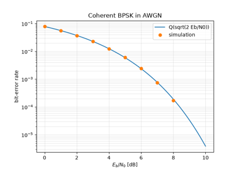
Kotel’nikov’s optimum receiver: BPSK in white Gaussian noise
1948 – Shannon’s Entropy and the Binary Symmetric Channel#
“A Mathematical Theory of Communication” defined the information of a source as its entropy, \(H = -\sum p\log_2 p\) bits per symbol, the minimum average length of any lossless encoding. It defined the capacity of a channel as the largest mutual information between input and output. And it proved the startling noisy-channel coding theorem: below capacity, codes exist that make the error probability as small as desired. For a binary symmetric channel that flips each bit with probability \(p\), the capacity is \(1 - H(p)\).
Implementation: engineeringkit.communications.entropy_binary() and
engineeringkit.communications.binary_symmetric_capacity(). The example
measures the empirical entropy of biased bit streams and maximises mutual
information over input distributions.
References: C. E. Shannon, “A mathematical theory of communication,” Bell Syst. Tech. J. 27 (1948) 379-423, 623-656.
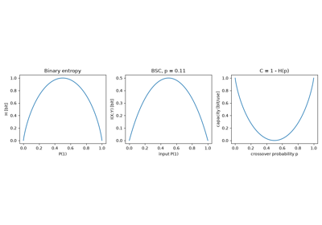
Shannon’s entropy and the binary symmetric channel
1949 – The Shannon-Hartley Capacity Theorem#
In “Communication in the presence of noise”, Shannon used a geometric argument about spheres in signal space to give the capacity of a band-limited channel with white Gaussian noise: \(C = B\log_2(1 + S/N)\) bits per second. The formula sets the exchange rate between bandwidth and power. As bandwidth grows without limit, the energy per bit needed for reliable communication falls to \(\ln 2\), or -1.59 dB, the Shannon limit that turbo and LDPC codes approached half a century later.
Implementation: engineeringkit.communications.shannon_capacity() and
engineeringkit.communications.spectral_efficiency(). The example plots
the capacity curve and the minimum \(E_b/N_0\) for each spectral
efficiency.
References: C. E. Shannon, “Communication in the presence of noise,” Proc. IRE 37 (1949) 10-21.
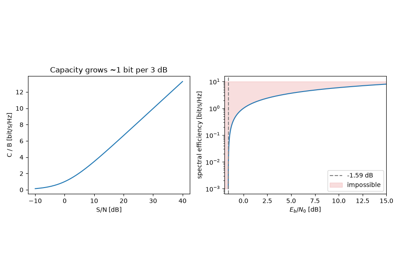
The Shannon-Hartley capacity of a noisy band-limited channel
1950 – Hamming’s Error-Correcting Codes#
Richard Hamming’s relay computer at Bell Labs detected errors over the weekend but could only abort the job. Hamming designed codes that correct them. In the (7,4) code, parity bits at positions 1, 2 and 4 each check the positions whose binary index contains that bit. When a single bit flips, the pattern of failed checks, the syndrome, spells out its position in binary. Hamming also introduced the distance between codewords: a minimum distance of three is exactly what single-error correction requires.
Implementation: engineeringkit.communications.hamming74_encode(),
engineeringkit.communications.hamming74_decode() (returning a
HammingDecodeResult) and
engineeringkit.communications.hamming_distance(). The example corrects
every single-bit error and compares coded and uncoded block error rates.
References: R. W. Hamming, “Error detecting and error correcting codes,” Bell Syst. Tech. J. 29 (1950) 147-160.
1960 – Quadrature Modulation#
A cosine and a sine carrier at the same frequency are orthogonal, so each can be modulated independently and separated again by coherent detection. Charles Cahn’s analysis of combined phase and amplitude modulation put quadrature signalling on a quantitative footing for data transmission. Quadrature phase-shift keying sends two bits per symbol in the bandwidth of one, with the same bit-error rate per unit \(E_b/N_0\) as BPSK. The same in-phase/quadrature idea underlies every QAM modem.
Implementation: engineeringkit.communications.qpsk() and
engineeringkit.communications.ber_qpsk_awgn(), plotted with
engineeringkit.communications.visualizers.plot_constellation(). The
example simulates a noisy QPSK constellation and separates the two rails of
a passband waveform.
References: C. R. Cahn, “Combined digital phase and amplitude modulation communication systems,” IRE Trans. Commun. Syst. 8 (1960) 150-155.
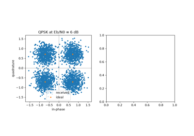
Quadrature modulation: QPSK doubles the rate at the same error rate
1962 – Telstar and the Satellite Link Budget#
Telstar 1, built by Bell Labs and launched in July 1962, relayed the first live transatlantic television between Andover, Maine and stations in Europe. Its 4 GHz downlink transmitted only a few watts, and the signal was received by a large horn antenna with a maser preamplifier cooled to a few kelvin. Such systems were designed with a link budget: transmitter power, antenna gains, free-space and other losses added in decibels, then compared with the receiver noise floor \(kTB\) to give the signal-to-noise ratio.
Implementation: engineeringkit.communications.link_budget_db()
together with the propagation and noise functions. The example budgets a
representative Telstar downlink over a pass.
References: A. C. Dickieson et al., “The Telstar experiment,” Bell Syst. Tech. J. 42 (1963) 739-1907 (special issue).
1966-1971 – Orthogonal Frequency-Division Multiplexing#
Robert Chang showed that many data subcarriers can overlap in frequency yet remain separable if they are spaced by exactly the symbol rate. Stephen Weinstein and Paul Ebert generated all the subcarriers with a single inverse discrete Fourier transform and recovered them with a forward DFT. They also prefixed each block with a copy of its tail, a cyclic prefix that makes a multipath channel’s convolution circular. Each subcarrier then sees a single complex gain, removed by one division. OFDM became practical with fast DSP chips and now carries Wi-Fi, LTE, 5G and digital broadcasting.
Implementation: engineeringkit.communications.ofdm_modulate() and
engineeringkit.communications.ofdm_demodulate(). The example passes
QPSK-loaded OFDM through a multipath channel with and without a cyclic
prefix.
References: R. W. Chang, “Synthesis of band-limited orthogonal signals for multichannel data transmission,” Bell Syst. Tech. J. 45 (1966) 1775-1796; S. B. Weinstein and P. M. Ebert, “Data transmission by frequency-division multiplexing using the discrete Fourier transform,” IEEE Trans. Commun. Technol. 19 (1971) 628-634.
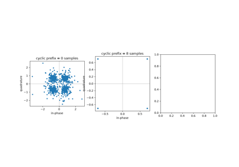
OFDM: many subcarriers from one inverse DFT